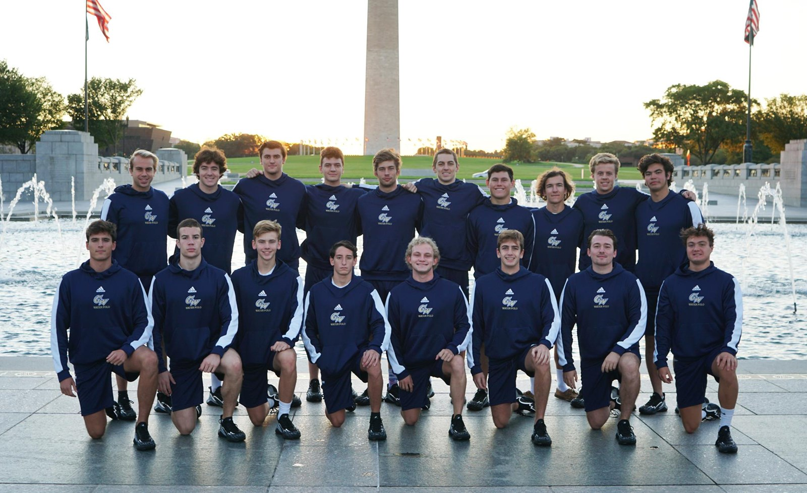

I began playing Waterpolo when I was nine years old and in the third grade. My dad played in highschool and I had some older friends from Church who were currently playing at the time. I thought it looked fun so I gave it a try and instantly fell in love with the sport. I have always had a very competitive mindset so i always strived to be the best I could be. I consistently made the "A" team even before I started taking it seriously. My mom thought this would be a good tool to help me get into a good college and I loved playing it so i pursued it. When I was in eigth grade, I made the national team and realized that I could make something out this. I started on varsity my freshman year of highschool and continued to all four years. We won our regional championships twice and our local tournaments consistently. When I was 16, my club team got second in the nation and I was devasted. Before that, the closest I had come to winning the national championship was third. Then when I was 18, or this past summer, my team won the national tournament and we were crowned the best team in the nation. I have never felt so proud and joyful. I now play here at GW and continue to love the sport. We had a good season this year ending 7-5 in conference and took third at the MAWPC Championships. Next year I strive to do even better.
Here is a picture of the GW Mens Waterpolo Team in front of the Washington Memorial
